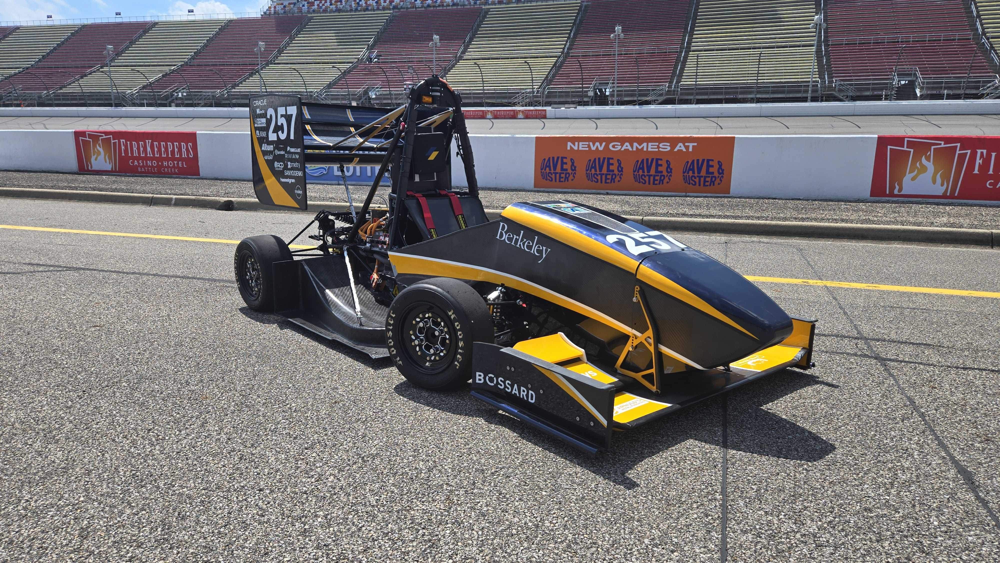
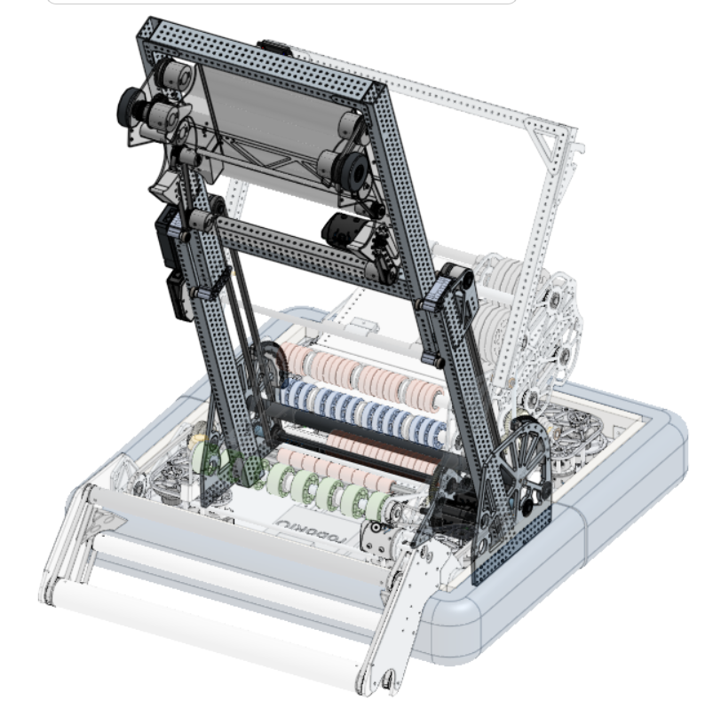

Berkeley Formula Electric, Aerodynamics



Berkeley Formula Electric, Aerodynamics (FSAE EV)
- SN5 Aerodynamics Subteam Lead
Designed and validated aerodynamic structures for Berkeley Formula Electric’s SN4 and SN5 racecars.
- Led the SN5 aero team, coordinating design, FEA validation, manufacturing, and composite layups.
- Designed the SN4 undertray mold and SN5 rear wing structures using Fusion 360 and ANSYS Mechanical.
- Ran structural FEA to optimize stiffness‑to‑weight ratios and reduce deflection under high‑load conditions.
- Programmed CAM toolpaths for mold machining and executed vacuum‑infusion composite layups for final parts.
- Collaborated with vehicle dynamics and chassis teams to ensure aero package integration and manufacturability.
Impact: Delivered a lighter (~10-25% mass down per element) aero package that improved downforce (ClA/CdA ratio) and shortened composites manufacturing timeline by 1 month.
UC Berkeley School Projects


- ME100: P.A.R.C.E.L. Smart Mailbox IoT‑Enabled Secure Package Storage System:
Developed a fully integrated smart mailbox using three ESP32 microcontrollers, I2C, and Wifi communication, combining sensing, security, and remote user interaction.
- Built a laser‑cut enclosure with embedded force, inertial, and distance sensors for package detection and tamper monitoring.
- Implemented a motorized locking mechanism controlled by the internal ESP32 module.
- Programmed real‑time alerts via email and buzzer notifications for delivery and security events.
- Designed a handheld remote interface enabling secure remote unlocking.
- E29: 3D‑Printed Wind Turbine Optimization
Small‑Scale Wind Turbine Design, Fabrication & Testing:
Designed, manufactured, and tested a lightweight wind turbine optimized for stiffness, manufacturability, and power output.
- Modeled aerodynamic blades inspired by the SG6043 airfoil, tuned for 25 mph wind conditions.
- Designed a twisted‑blade profile (10° root, 5° tip) to balance lift and drag at small scales.
- Engineered a modular 3D‑printed tower under volume and mass constraints (<300 g target).
- Conducted stiffness testing (17.755 N/mm, R² = 0.987) and power generation trials (1.105 W peak, 14.1% efficiency).
- Iterated designs to meet printability and structural strain requirements.
FRC Team 1678 Citrus Circuits
2024 Captain, 2022–2024 Hardware Design Subsystem Lead, 2023 Strategy Lead
Led mechanical design, manufacturing, and integration for internationally top-8 ranked FIRST robots built in a six‑week engineering cycle.
- 2024 Tangerine Tumbler (Torus Placing and Shooting Robot)
- Designed the AMP scoring mechanism (single‑stage elevator and torus game‑piece placement system).
- Developed a triple‑point routing system enabling both AMP scoring and back‑exit shooting.
- Oversaw manufacturing timelines, subsystem integration, and on‑robot testing. - 2023 Nik (Cone and Cube Pick & Place Robot)
- Designed the end effector for multi‑game‑piece manipulation using hollow polycarbonate rollers and silicone‑wrapped grip surfaces.

